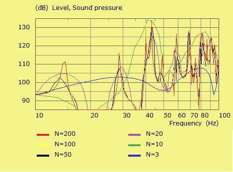

Normally the observation frequencies should be identical to the ones specified at the solving stage. However, ABEC allows for plotting spectra with a higher density of frequency points at observation stage. This means that you can observe frequency points for which the Helmholtz Integral has not actually been solved for. This technique is, of course an approximation and can yield to substantial errors. However, in many cases the error is manageable and easily recognizable. The advantage of under-sampling is that calculation is quicker and can give clues where to search for resonance peaks and frequency bands of interest. The applied interpolation technique is explained in [6].
For example, if you have specified in
Control_Solver
f1=10; f2=100;
NumFrequencies=20;
Abscissa=log
then, for example, ABEC allows for specification of an output spectrum like this
Control_Spectrum
Name="Chamber"
NumFrequencies=200
Abscissa=log
...
BE_Spectrum
PlotType=Curves
...
In the above example the frequency-resolution during the calculation of the Helmholtz Integral at the observation stage is ten times higher than at solving stage. In order to get a feeling how the interpolation (or rather extrapolation) works, it is best to demonstrate this with the help of an example. The following simulation is using one of the standard examples provided with ABEC called "Chamber with Damped Walls". The example exhibits a simple shoebox-type room. We shall switch off the damping in order to excite a strong resonating field.
The above contour plot shows an example of the sound pressure field of this room at 80Hz and no damping. To the left are the exciting points and to the right are marked the receiving points, from which we use the nearest one only.

The above sound pressure response-curves have all an identical set-up. Only the parameter Control_Solver/ NumFrequencies= is changing from N=3 to N=200. The number of observation frequency points is held fixed at N=200. Hence, the red curve with N=200 yields the most detailed calculation. It reveals the modal excitation of the room.
The lower the number of solving-points the least exact the result becomes. However, it is surprising how close the curve, say for N=20 (purple), is already to the highly detailed one. Of course with just a tenth of solving cycles the calculation time is way faster. In practice this crude solution is often good enough for setting up a simulation, or of advantage for investigation or orientation purposes.
You can use the interpolation technique for spectrum-plots only. Note, that the result yields only an approximation and may be subject to substantial errors. Exact results you obtain only if the frequency abscissa of the observation points is identical with the abscissa specified in Control_Solver.
Note: Previous versions of ABEC allowed to specify intermediate frequencies for field-plots as well. However, it turned out that results often were too difficult to interpret.